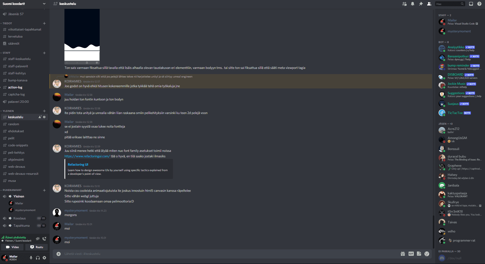

Tietoa Ryhmästämme
Tervetuloa. Suomi Koodarit on marraskuussa 2021
perustettu Discord palvelin, jossa on pääsääntöisesti keskustelua
koodaamisesta, pelikehityksestä ja muista tietokonemaailmaan
liittyvistä asioista. Teimme yhteisön, jotta näistä asioista olisi
helppo alusta keskustella ja kehittyä. Palvelimella on päivittäin
keskustelua ja haluamme auttaa muita, jolloin kehittyminen
tietokonemaailman asioissa olisi mukavaa ja helpompaa. Yhteisö on
tarkoitettu kaiken ikäisille ja tasoisille, ja kaikki ovat
lämpimästi tervetulleita.
Liity mukaan Suomi Koodarit discord yhteisöömme.

LIITY DISCORDIIN
JOS LINKKI ON VANHENTUNUT, LIITY
TÄSTÄ